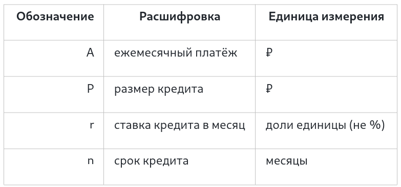

8. Кредитный калькулятор.
Условие:
Пользователь вводит желаемую сумму кредита в тысячах рублей и срок в годах
(и то, и другое может быть дробным числом),
программа выводит сумму ежемесячного платежа. Ставка 5.5% в год.
Формула для расчёта:

Некоторые единицы измерения в задании и в формуле различается, так что программа должна перевести некоторые значения в другие единицы.
Код:
kredit = float(input("Введите желаемую сумму кредита в тысячах рублей: "))
srok = float(input("Введите на какой срок в годах Вы хотите взять кредит: "))
STAVKA = 5.5
MONTH_IN_YEAR = 12
kredit_perevod_rub = round((kredit * 1000), 2) # перевод в единицы измерения
stavka_month_fraction = STAVKA / MONTH_IN_YEAR / 100
srok_month = srok * MONTH_IN_YEAR
numerator = stavka_month_fraction * ((1 + stavka_month_fraction) ** srok_month) # расчёт по формуле
denominator = ((1 + stavka_month_fraction) ** srok_month) - 1
payment = kredit_perevod_rub * (numerator / denominator)
print("Ежемесячный платёж", round(payment, 2), "рублей")